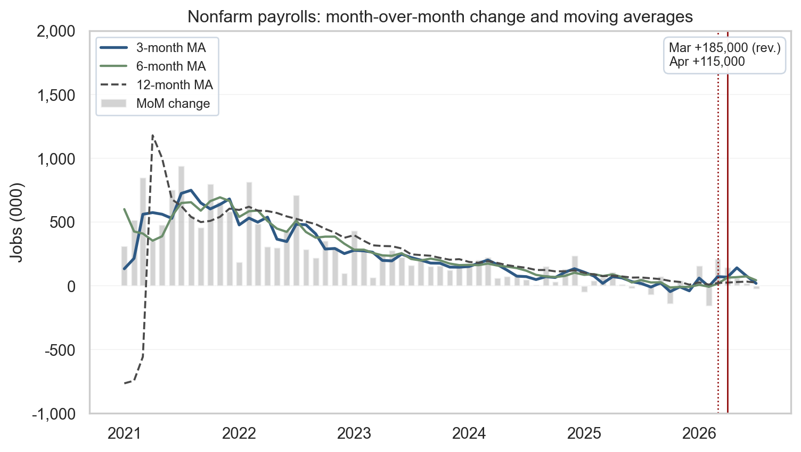
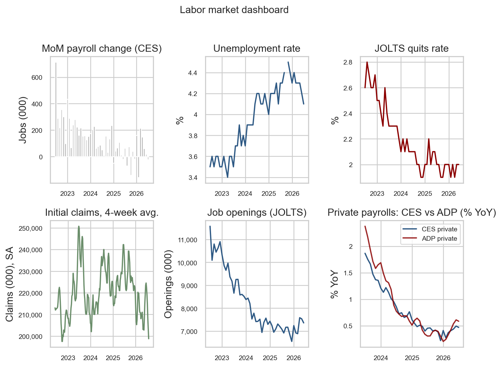
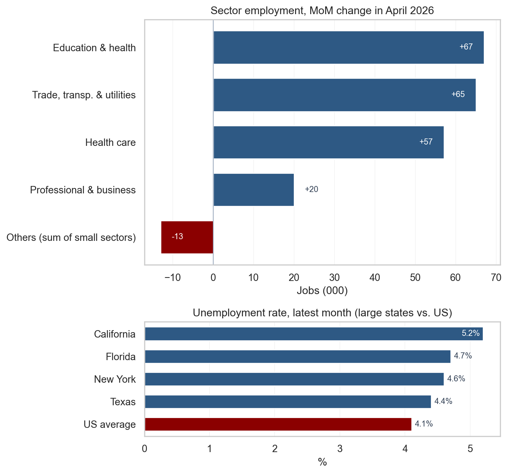
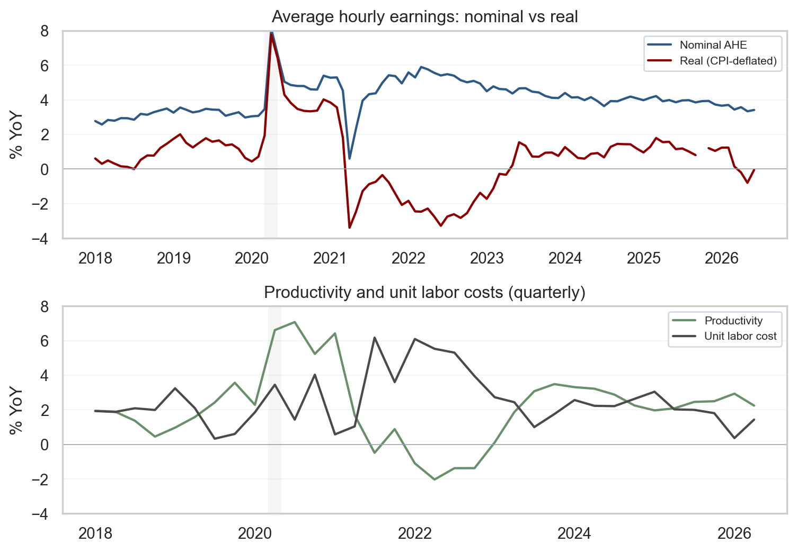
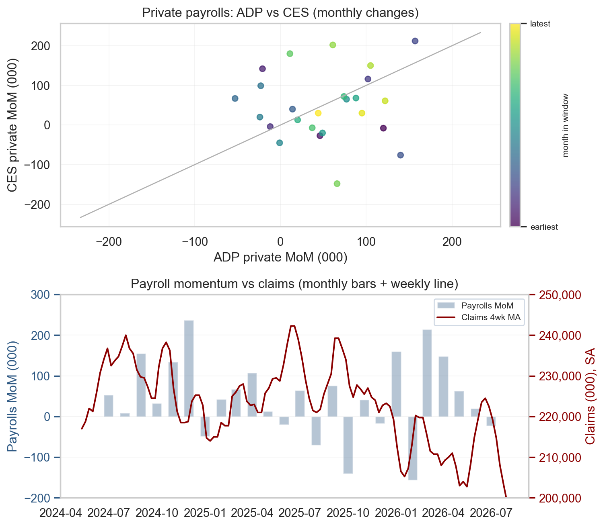

April 2026 Jobs Report: Soft Payrolls Follow March Rebound - What the Full Labor Dashboard Reveals
April 2026 jobs report shows +115k payrolls and 4.3% unemployment. Full dashboard analysis of revisions, sectors, wages, JOLTS, claims, and implications for the Fed and markets.
economics
labor-market
data-visualization
visualization
Author
Yoram Gilboa
Published
May 9, 2026
Executive summary
The April 2026 Employment Situation release printed +115,000 nonfarm payrolls, softer than the consensus near +180,000, while the unemployment rate held at 4.3%. The household survey showed a -226,000 drop in employment that markets will treat as month-to-month noise rather than a regime shift. March payrolls were revised up to +185,000, while February was revised down by 23,000. The clean read on the cycle: a soft month inside a still-positive trend, headed into the May 12 CPI release and a steady-policy FOMC window.
NoteNote on data
Headline payroll, unemployment, average hourly earnings, household-survey employment, and industry-detail values are taken from the BLS press release for April 2026 (May 8, 2026) and recorded in stats/summary_stats.json as the single source of truth used by the prose, the executive-summary cards, and the figure annotations. All FRED-pulled series (PAYEMS, UNRATE, JTSJOL, JTSQUR, ICSA, CPIAUCSL, OPHNFB, ULCNFB, USREC, ADPMNUSNERSA, CE16OV, state UR, and the sector employment aliases listed in the sources table) are retrieved with fredapi when FRED_API_KEY is set, otherwise via the FRED graph CSV export cached in data/. The ADP series is rescaled from persons to thousands so its month-over-month changes line up with CES private employment. Recession shading uses the monthly USREC indicator and is illustrative rather than an official NBER chronology graphic. Data current as of May 8, 2026.
Nonfarm Payrolls
+115,000
April 2026 (soft vs +180,000 consensus)
Unemployment Rate
4.3%
Unchanged from March
March Revision
+185,000
up from initial print
April 2026 Employment Situation | BLS via FRED | data current May 8, 2026
1. Headline vs. underlying trends
Two surveys, one report
The monthly Employment Situation release combines two surveys with different concepts and sample frames. The establishment survey (BLS Current Employment Statistics) asks businesses how many people they employed during the reference pay period, which produces the headline nonfarm payrolls number and the wage and hours detail. The household survey (Current Population Survey) asks roughly 60,000 households whether each adult member is employed, unemployed, or out of the labor force, which produces the unemployment rate, the participation rate, and the household measure of employment. The two surveys can disagree in any single month because they count different things (jobs vs. people, including the self-employed and unpaid family workers in the household concept), use different reference periods, and have very different sample sizes. That is why the BLS publishes both, and why the cleanest read on the cycle uses both.
What April delivered
In April 2026, the establishment count moved up +115,000 while household employment fell -226,000. That kind of split shows up regularly in the historical record without implying a hidden recession. The unemployment rate held at 4.3% because household employment and the labor force can move together in ways the headline jobs count alone does not summarize. Revisions were the second story: March was bumped up to +185,000 while February was trimmed by 23,000. The disciplined way to read this is to track the three- and six-month moving averages alongside the latest print, which smooths weather, strikes, and the sampling and benchmarking quirks that move single months around.
Show code
# =============================================================================# FIGURE 1: PAYROLLS MoM WITH MOVING AVERAGES# What the chart says: any single month of payrolls is volatile, so April's# +115,000 is best read against the trend. Three moving averages (3-, 6-,# 12-month) let the eye pick out short- vs medium-term smoothing; a single# upper-right callout summarizes the latest two months.# =============================================================================# Build moving averages on the MoM change series. min_periods=1 keeps the# line continuous from the leftmost date instead of starting blank for the# first 11 months.ma3 = mom.rolling(3, min_periods=1).mean()ma6 = mom.rolling(6, min_periods=1).mean()ma12 = mom.rolling(12, min_periods=1).mean()# Start the window in 2021 so the post-COVID recovery distortion is also# off-chart; with a -1,000/+2,000 y-axis the eye lands on the recent cycle# rather than the 2020 pandemic shock.end = pay.index.max()start = pd.Timestamp("2021-01-01")plot_m = mom.loc[start:end]fig, ax = plt.subplots(figsize=(8, 4.6))shade_recessions(ax, start, end)# Quiet the grid: keep only a faint horizontal grid for vertical reading,# drop the vertical grid entirely. The whitegrid theme is too dense for a# chart that already carries bars, three lines, vertical markers, and# a callout box.ax.grid(axis="y", alpha=0.25, linewidth=0.6)ax.grid(axis="x", visible=False)ax.set_axisbelow(True)# Bars: monthly change. Lines: progressively smoother trend signals.ma3_w = ma3.loc[start:end]ma6_w = ma6.loc[start:end]ma12_w = ma12.loc[start:end]ax.bar(plot_m.index, plot_m.values, width=20, color=COLORS["light"], alpha=0.55, label="MoM change")ax.plot(ma3_w.index, ma3_w.values, color=COLORS["primary"], linewidth=2.0, label="3-month MA")ax.plot(ma6_w.index, ma6_w.values, color=COLORS["secondary"], linewidth=1.6, label="6-month MA")ax.plot(ma12_w.index, ma12_w.values, color=COLORS["neutral"], linewidth=1.4, linestyle="--", label="12-month MA")# Vertical guides at Mar (revised) and Apr (latest). Values themselves are# summarized in the upper-right callout rather than via two arrow annotations.march = pd.Timestamp("2026-03-01")april = pd.Timestamp("2026-04-01")ax.axvline(march, color=COLORS["accent"], linestyle=":", linewidth=1.0)ax.axvline(april, color=COLORS["accent"], linestyle="-", linewidth=1.0)callout = (f"Mar {fmt_jobs(stats['payroll_march_revised'])} (rev.)\n"f"Apr {fmt_jobs(stats['payroll_april'])}")ax.text(0.985, 0.97, callout, transform=ax.transAxes, ha="right", va="top", fontsize=9, multialignment="left", bbox=dict(boxstyle="round,pad=0.4", facecolor="white", edgecolor="#cbd5e1", alpha=0.95),)ax.set_title("Nonfarm payrolls: month-over-month change and moving averages")ax.set_ylabel("Jobs (000)")# Tight y-range: typical monthly variation is +/-300-500k, so this band keeps# the bars and lines readable while letting COVID (~-20,500k) run off-chart.ax.set_ylim(-1000, 2000)ax.yaxis.set_major_formatter(FuncFormatter(lambda x, _: f"{int(x):,}"))ax.xaxis.set_major_locator(mdates.YearLocator())ax.xaxis.set_major_formatter(mdates.DateFormatter("%Y"))# Legend on the upper-left in legible font size; framed lightly so it does# not float ambiguously over the bars.ax.legend(loc="upper left", fontsize=9, frameon=True, framealpha=0.9, edgecolor="#cbd5e1")plt.tight_layout()# Also persist the figure to images/ so the og:image preview stays in sync# with content. Quarto still inlines the figure via the fig-cap above.fig.savefig(IMG_DIR /"april-2026-payrolls-ma.png", dpi=300, bbox_inches="tight")plt.show()

Figure 1: Month-over-month nonfarm payroll change with 3-, 6-, and 12-month moving averages. April’s +115k sits below the 6-month average; March was revised up to +185k. source: BLS via FRED (PAYEMS); recession shading from USREC.
2. The full labor dashboard
A single chart of payrolls cannot adjudicate whether the labor market is rebalancing or breaking. The dashboard below compresses six complementary indicators that, taken together, describe the cycle without overweighting any single survey.
The three data sources behind the panels
Current Employment Statistics (CES) is the BLS establishment survey of roughly 119,000 businesses and government agencies that produces the headline payroll number, hours, and wage detail. CES is the canonical jobs series the market reacts to on release day.
Job Openings and Labor Turnover Survey (JOLTS) is a separate BLS survey of about 21,000 establishments that measures unfilled openings, hires, quits, and layoffs. JOLTS turns the labor market into a flow problem rather than a stock photo: openings tell you where firm-side demand is going, and the quits rate tells you how confident workers feel about their alternatives.
ADP National Employment Report is a private, independent count built from the actual payroll records of roughly 26 million workers processed by Automatic Data Processing (ADP), the company that pays them. ADP is the cleanest non-BLS cross-check for whether the establishment survey is telling the same story the private-sector microdata tells.
Together with weekly initial unemployment claims from the state offices that file them under the Department of Labor program, these sources let us read the cycle from four different angles: jobs added (CES), workers flowing in and out (JOLTS), independent payroll counts (ADP), and the highest-frequency early-warning signal (claims).
Show code
# =============================================================================# FIGURE 2: SIX-PANEL LABOR MARKET DASHBOARD# What the chart says: each cell is a different lens on the same labor market.# Reading them together is the antidote to overreacting to any single number,# which is what the headline payrolls beat-or-miss narrative encourages.# =============================================================================# A 2x3 grid keeps the panels readable inline. We do not share x-axes because# the bottom-left claims panel is weekly while the others are monthly; trying# to share would either compress the weekly panel or stretch the monthly ones.end = pay.index.max()start = end - pd.DateOffset(months=48)fig, axes = plt.subplots(2, 3, figsize=(8, 6), sharex=False)# Top-left: monthly payroll changes (the headline series). Grey bars# deliberately recede so the eye picks up the level rather than month noise.mom_ds = mom.loc[start:end]shade_recessions(axes[0, 0], start, end)axes[0, 0].bar(mom_ds.index, mom_ds.values, width=22, color=COLORS["light"])axes[0, 0].set_title("MoM payroll change (CES)")axes[0, 0].set_ylabel("Jobs (000)")# Top-middle: unemployment rate. The pandemic spike has long since dropped# off this 48-month window, leaving the post-2022 path in clear view.u = S("unrate").loc[start:end]shade_recessions(axes[0, 1], start, end)axes[0, 1].plot(u.index, u.values, color=COLORS["primary"])axes[0, 1].set_title("Unemployment rate")axes[0, 1].set_ylabel("%")# Top-right: JOLTS quits rate. Quits are a clean read on worker confidence# because people quit when they think they can find a better job.q = S("jolts_quits").loc[start:end]shade_recessions(axes[0, 2], start, end)axes[0, 2].plot(q.index, q.values, color=COLORS["accent"])axes[0, 2].set_title("JOLTS quits rate")axes[0, 2].set_ylabel("%")# Bottom-left: initial claims, four-week moving average. Claims are weekly# and noisy; the 4-week average is the standard smoothing convention used# by Treasury and Fed staff. No source label here: the figure caption holds# the citation for the whole panel.cl = S("claims")cl = cl.loc[cl.index >= (start - pd.DateOffset(months=1))]cl_ma = cl.rolling(4, min_periods=1).mean()axes[1, 0].plot(cl_ma.index, cl_ma.values, color=COLORS["secondary"])axes[1, 0].set_title("Initial claims, 4-week avg.")axes[1, 0].set_ylabel("Claims (000), SA")# Bottom-middle: JOLTS job openings, the firm-side demand signal.jo = S("jolts_openings").loc[start:end]shade_recessions(axes[1, 1], start, end)axes[1, 1].plot(jo.index, jo.values, color=COLORS["primary"])axes[1, 1].set_title("Job openings (JOLTS)")axes[1, 1].set_ylabel("Openings (000)")# Bottom-right: CES vs. ADP private payrolls in YoY %. We compare YoY growth# rather than levels because the two series have different absolute levels# (concept and benchmarking differences); growth rates strip that out.priv = S("private_payrolls")adp = S("adp_private")yp = yoy_pct(priv.loc[start:end])ya = yoy_pct(adp.loc[start:end])axes[1, 2].plot(yp.index, yp.values, label="CES private", color=COLORS["primary"])axes[1, 2].plot(ya.index, ya.values, label="ADP private", color=COLORS["accent"], alpha=0.85)axes[1, 2].set_title("Private payrolls: CES vs ADP (% YoY)")axes[1, 2].legend(fontsize=8, loc="upper right")axes[1, 2].set_ylabel("% YoY")# Tidy date formatting on every panel. The y-tick formatter adds a thousand# separator only when the magnitude crosses 1,000, so percent panels keep# their decimal labels unchanged while claims/openings get readable commas.# Format the x-axis with year-only labels and a smaller font; with the figure# now 8" wide across three columns, "%Y-%m" labels overlap badly.fmt_k = FuncFormatter(lambda x, _: f"{int(x):,}"ifabs(x) >=1000elsef"{x:g}")for ax in axes.ravel(): ax.xaxis.set_major_locator(mdates.YearLocator(1)) ax.xaxis.set_major_formatter(mdates.DateFormatter("%Y")) ax.yaxis.set_major_formatter(fmt_k) ax.tick_params(axis="x", labelsize=8) ax.tick_params(axis="y", labelsize=8)fig.suptitle("Labor market dashboard", fontsize=12, y=1.02)plt.tight_layout()# Save this panel as the canonical og:image for the post (it's the most# information-dense view and the one used in social previews).fig.savefig(IMG_DIR /"april-2026-labor-dashboard.png", dpi=300, bbox_inches="tight")plt.show()

Figure 2: Six-panel labor market dashboard covering the last 48 months: payrolls, unemployment, quits, claims, openings, and a CES-vs-ADP private-employment cross-check. source: BLS via FRED; ADP via FRED (ADPMNUSNERSA).
Reading the dashboard
Walking the panels top-to-bottom, left-to-right:
The top-left bars show hiring cooling: the bars get visibly smaller through 2025 and into early 2026, but they never tip persistently negative. That is the “soft month, positive trend” picture the headline alone cannot deliver.
The top-middle line is the unemployment rate. It drifted from about 3.5% in early 2023 up to 4.3% today and has held there for several months. A stable unemployment rate while hiring slows is the textbook signature of a labor market that is rebalancing, not breaking - if firms were actually shedding workers, this line would already be moving.
The top-right quits rate has dropped from a 3% pandemic peak to around 2%, which is roughly the pre-pandemic norm. Workers quit when they think they can find a better job, so this is what a calm labor market looks like, not a scared one.
The bottom-left four-week initial claims line sits in a tight 200,000-250,000 band - the level historically associated with a healthy labor market. If the economy were actually turning, claims is the first place we would see it, and we do not.
The bottom-middle job-openings line has fallen from a 12 million peak in 2022 to about 7 million today. Firms still want workers, but the post-pandemic hiring frenzy is over. Falling-but-still-elevated openings are consistent with normalization, not retrenchment.
The bottom-right panel is the cross-check on the BLS print: it overlays year-over-year private payroll growth from BLS (CES, blue) and from ADP’s independent payroll-processing data (red). The two lines decelerate together from about 2.5% to about 0.5%, which is the strongest evidence that the slowdown the BLS is reporting is real - not an artifact of one survey’s methodology.
Read together, every panel says cooling and no panel says breaking. That is the configuration the report supports today.
3. Sectoral and geographic divergences
Sector detail in the BLS press release showed strength in health care (+37,000), transportation and warehousing (+30,000), and retail trade (+22,000), alongside cuts in federal government (-9,000) and information (-13,000). The top panel below plots the April month-over-month change by major sector implied by the FRED employment series used in this post, with sectors changing by less than 10,000 jobs collapsed into a single “Others” bucket so the dominant contributors are visible at a glance. The pattern is broadly consistent with a service-led expansion and goods-adjacent volatility.
The bottom panel shows the latest unemployment rate for California, Texas, New York, and Florida against the US average. The four largest states sit in a tight band around the national figure, which means regional labor markets are not dramatically decoupled from the national picture even where industry mix differs. Divergences at the state level typically reflect that industry mix and migration flows rather than a separate national cycle.
Show code
# =============================================================================# FIGURE 3: HORIZONTAL SECTOR MoM (TOP) AND LARGE-STATE UR (BOTTOM)# What the chart says: where the headline payroll number actually came from# (sector detail) and whether the regional picture matches the national# read (large states vs. US). Two horizontal panels read top-to-bottom like# a list, which is more legible than vertical bars when names are long.# =============================================================================# ----- Top panel: April sector MoM with small sectors aggregated as "Others"# Showing only April keeps the eye on the latest month. Three side-by-side# months in the prior version diluted the signal we care about today.sector_keys = ["construction","manufacturing","trade_trans_util","prof_bus","edu_health","health_care","leisure","information","government",]april = pd.Timestamp("2026-04-01")march = april - pd.DateOffset(months=1)# Build a tidy table of {sector_label: April MoM in 000} for each available# series, computed directly from the FRED levels at march and april.sector_label = {"construction": "Construction","manufacturing": "Manufacturing","trade_trans_util": "Trade, transp. & utilities","prof_bus": "Professional & business","edu_health": "Education & health","health_care": "Health care","leisure": "Leisure & hospitality","information": "Information","government": "Government",}sector_mom = {}for sk in sector_keys: s = S(sk)if april in s.index and march in s.index: sector_mom[sector_label[sk]] =float(s.loc[april] - s.loc[march])ser = pd.Series(sector_mom)# "Others" bucket: anything with absolute change < 10 (000 jobs) gets pooled.# This collapses the noise into one bar so the actual signal stands out.SMALL =10.0big = ser[ser.abs() >= SMALL]small = ser[ser.abs() < SMALL]iflen(small) >0: big["Others (sum of small sectors)"] =float(small.sum())# Sort descending so the largest positive contribution sits at the top.big = big.sort_values(ascending=True)# Color positive bars in the primary blue, negatives in the accent red.bar_colors = [COLORS["accent"] if v <0else COLORS["primary"] for v in big.values]# ----- Bottom panel: large-state UR plus the US averagestate_keys = [("ca_unrate", "California"), ("tx_unrate", "Texas"), ("ny_unrate", "New York"), ("fl_unrate", "Florida")]state_ur = {}for sk, name in state_keys: ssr = S(sk).dropna() state_ur[name] =float(ssr.iloc[-1])state_ur["US average"] =float(S("unrate").dropna().iloc[-1])ur_ser = pd.Series(state_ur).sort_values(ascending=True)# Two stacked panels with different relative heights: the sector list is# tall (10 rows), the state list is short (5 rows), so unequal heights via# height_ratios keeps both legible.fig, (ax_top, ax_bot) = plt.subplots(2, 1, figsize=(8, 7.5), gridspec_kw={"height_ratios": [3.0, 1.4]},)# Top: sector horizontal barsax_top.barh(big.index, big.values, color=bar_colors, edgecolor="white", height=0.7)ax_top.axvline(0, color="#94a3b8", linewidth=0.8)ax_top.set_title(f"Sector employment, MoM change in April 2026")ax_top.set_xlabel("Jobs (000)")ax_top.grid(axis="x", alpha=0.25, linewidth=0.6)ax_top.grid(axis="y", visible=False)ax_top.set_axisbelow(True)# Value labels at the end of each bar, offset by a small amount so the# label does not overlap the bar. Each side of zero has its own threshold# so an asymmetric distribution (lots of positives, one small negative)# still flips the extreme bars to INSIDE-the-bar placement; otherwise the# label collides with the axis frame.xpad =max(big.abs()) *0.04pos_max = big[big >0].max() if (big >0).any() else0neg_max =abs(big[big <0].min()) if (big <0).any() else0for i, v inenumerate(big.values): txt =f"{v:+.0f}" near_right_edge = v >0and pos_max >0and v >=0.85* pos_max near_left_edge = v <0and neg_max >0andabs(v) >=0.85* neg_maxif near_right_edge: ax_top.text(v - xpad, i, txt, va="center", ha="right", fontsize=9, color="white")elif near_left_edge: ax_top.text(v + xpad, i, txt, va="center", ha="left", fontsize=9, color="white")elif v >=0: ax_top.text(v + xpad, i, txt, va="center", ha="left", fontsize=9, color="#334155")else: ax_top.text(v - xpad, i, txt, va="center", ha="right", fontsize=9, color="#334155")# Bottom: state UR horizontal bars, with US average highlighted.state_colors = [COLORS["accent"] if name =="US average"else COLORS["primary"]for name in ur_ser.index]ax_bot.barh(ur_ser.index, ur_ser.values, color=state_colors, edgecolor="white", height=0.6)ax_bot.set_title("Unemployment rate, latest month (large states vs. US)")ax_bot.set_xlabel("%")ax_bot.grid(axis="x", alpha=0.25, linewidth=0.6)ax_bot.grid(axis="y", visible=False)ax_bot.set_axisbelow(True)# Like the top panel, push the largest bar's label inside so the % does# not crash into the axis frame.ur_max = ur_ser.max()for i, v inenumerate(ur_ser.values):if v >=0.95* ur_max: ax_bot.text(v -0.05, i, f"{v:.1f}%", va="center", ha="right", fontsize=9, color="white")else: ax_bot.text(v +0.05, i, f"{v:.1f}%", va="center", ha="left", fontsize=9, color="#334155")plt.tight_layout()fig.savefig(IMG_DIR /"april-2026-sector-mom.png", dpi=300, bbox_inches="tight")plt.show()

Figure 3: Top: April 2026 sector employment change, sectors below 10,000 jobs aggregated as ‘Others’ so the largest contributors stand out. Bottom: latest unemployment rate for the four most populous states against the US average. source: BLS via FRED (CES supersector aliases; CAUR, TXUR, NYUR, FLUR; UNRATE).
4. Wages, productivity, and the inflation link
Average hourly earnings (AHE) for all employees on private payrolls rose 0.2% month over month to $37.41, a pace that keeps nominal wage growth in the same neighborhood as recent months. AHE is the BLS measure of total wages and salaries divided by total paid hours - the simplest, fastest-arriving wage gauge in the monthly release. Production and nonsupervisory workers posted a slightly faster 0.3% monthly gain in the release tables. The first panel below plots nominal and real year-over-year changes in AHE, deflating earnings by CPI before computing the YoY growth so that real purchasing power can be read directly. The second panel overlays nonfarm business productivity and unit labor costs (ULC) at quarterly frequency - the cleanest macro series for tracking the wage-inflation link.
The intuition for markets is straightforward. If nominal wage growth runs near productivity plus the Fed’s 2% inflation target, unit labor cost pressure stays contained and pricing models do not require a services-inflation correction. When nominal wages outrun productivity for sustained periods, services pricing models begin to allow for more persistence unless margins absorb the difference. A useful caution: AHE is a composition-sensitive measure - mix shifts across industries and skill levels move the aggregate even when individual wage schedules are stable. Pairing AHE with productivity and ULC at the business-sector level handles some of those composition effects differently than a simple division of payrolls by hours.
Show code
# =============================================================================# FIGURE 4: WAGES (NOMINAL vs. REAL) AND PRODUCTIVITY/UNIT LABOR COSTS# What the chart says: nominal wages tell you nothing about purchasing power;# real wages do. And the sustainable level of nominal wage growth depends on# productivity. Two stacked panels hold those two ideas side by side.# Compared to the prior version this chart is shorter (figsize), starts in# 2018 instead of 2015 to match the recent cycle frame used elsewhere, and# carries explicit y-limits so the recent path is not flattened by 2020-21# pandemic spikes.# =============================================================================# Top panel: align AHE and CPI on a monthly index so the deflation step is# point-by-point, then compute YoY for both nominal and real series.earn = S("earnings_all")cpi = S("cpi")dfw = pd.concat([earn, cpi], axis=1, join="inner")dfw.columns = ["earn", "cpi"]# Real wage index: nominal level / CPI level, scaled by 100 to put it on a# familiar index basis (the absolute level does not matter for the YoY).dfw["real"] = dfw["earn"] / dfw["cpi"] *100.0dfw["nom_yoy"] = dfw["earn"].pct_change(12, fill_method=None) *100.0dfw["real_yoy"] = dfw["real"].pct_change(12, fill_method=None) *100.0dfw = dfw.loc["2018-01-01":]# Bottom panel: productivity and ULC are quarterly; pct_change(4) gives a YoY# growth rate (4 quarters back).prod = S("productivity")ulc = S("ulc")dqp = pd.concat([prod, ulc], axis=1, join="inner")dqp.columns = ["prod", "ulc"]dqp["prod_yoy"] = dqp["prod"].pct_change(4, fill_method=None) *100.0dqp["ulc_yoy"] = dqp["ulc"].pct_change(4, fill_method=None) *100.0dqp = dqp.loc["2018-01-01":]# Shorter figure than before so each panel is dense rather than stretched.fig, (ax1, ax2) = plt.subplots(2, 1, figsize=(8, 5.6), sharex=False)# Top: nominal vs. real wages, with recession shading for context.shade_recessions(ax1, dfw.index.min(), dfw.index.max())ax1.plot(dfw.index, dfw["nom_yoy"], label="Nominal AHE", color=COLORS["primary"], linewidth=1.6)ax1.plot(dfw.index, dfw["real_yoy"], label="Real (CPI-deflated)", color=COLORS["accent"], linewidth=1.6)ax1.axhline(0, color="#94a3b8", linewidth=0.6)# Hard y-limits so the post-2022 path is the visible story rather than the# 2020-21 pandemic spike. Picked to comfortably contain the standing data.ax1.set_ylim(-4, 8)ax1.set_ylabel("% YoY")ax1.set_title("Average hourly earnings: nominal vs real")ax1.legend(loc="upper right", fontsize=8, frameon=True, framealpha=0.9, edgecolor="#cbd5e1")ax1.grid(axis="y", alpha=0.25, linewidth=0.6)ax1.grid(axis="x", visible=False)ax1.set_axisbelow(True)# Bottom: productivity and ULC.shade_recessions(ax2, dqp.index.min(), dqp.index.max())ax2.plot(dqp.index, dqp["prod_yoy"], label="Productivity", color=COLORS["secondary"], linewidth=1.6)ax2.plot(dqp.index, dqp["ulc_yoy"], label="Unit labor cost", color=COLORS["neutral"], linewidth=1.6)ax2.axhline(0, color="#94a3b8", linewidth=0.6)ax2.set_ylim(-4, 8)ax2.set_ylabel("% YoY")ax2.set_title("Productivity and unit labor costs (quarterly)")ax2.legend(loc="upper right", fontsize=8, frameon=True, framealpha=0.9, edgecolor="#cbd5e1")ax2.xaxis.set_major_formatter(mdates.DateFormatter("%Y"))ax2.xaxis.set_major_locator(mdates.YearLocator(2))ax2.grid(axis="y", alpha=0.25, linewidth=0.6)ax2.grid(axis="x", visible=False)ax2.set_axisbelow(True)plt.tight_layout()fig.savefig(IMG_DIR /"april-2026-wages-productivity.png", dpi=300, bbox_inches="tight")plt.show()

Figure 4: Top: nominal and CPI-deflated AHE, year over year. Bottom: nonfarm business productivity and unit labor costs, year over year (quarterly). source: BLS via FRED (CES0500000003, CPIAUCSL, OPHNFB, ULCNFB).
What the wage panels are telling you
The top panel answers the question every worker asks: is your raise keeping up with prices? Nominal AHE (blue) is growing about 4% year over year in the latest month, but real AHE (red, after taking CPI out) is growing only about 1% - workers are getting raises, but most of the headline wage growth is being eaten by inflation. When the red line was below zero in 2021-22, real wages were actually falling; the fact that it has been above zero through 2024-26 is the (slow) repair of pandemic-era purchasing-power losses.
The bottom panel answers the question the Fed cares about: is the wage path sustainable for prices? Productivity (green) growing faster than unit labor costs (gray) is the green light, because firms can pay higher wages without raising their own prices to offset. Today productivity is running near 3% YoY while unit labor costs are near 1%, which is comfortably inside the sustainable zone. When the gray line is above the green line (as it was in 2022), unit-cost pressure builds and the inflation hand-off from wages gets harder to contain.
The light gray vertical bars on both panels mark NBER-dated US recessions. In this window the only one is the short 2020 COVID recession; it is shown so the reader can compare today’s wage and productivity readings to a known downturn rather than to a blank background.
5. Cross-checks: ADP and initial claims
When the establishment and household surveys disagree, the right move is to consult independent sources. The two best high-frequency cross-checks are the ADP National Employment Report (a separate private-sector payroll measure built from real payroll-processing data) and initial unemployment claims (a weekly count from state UI offices, available on a one-week lag). Neither is a substitute for the BLS survey, but together they help reject the most aggressive interpretations of any single soft month: a real downturn would show up in claims rising and in ADP weakening alongside the BLS softness.
The figure below shows two views. In the top panel, each dot is one month from the last 24. Its position on the x-axis is the ADP private change, its position on the y-axis is the BLS (CES) private change, and the color runs from dark purple (earliest month in the window) to bright yellow (most recent) - that is what the colorbar on the right labels as “earliest” and “latest.” Dots clustered near the gray 45-degree line mean the two independent sources tell the same story for that month; dots far off the line are months where the two sources disagree. The recent months sit close to the line, which is the configuration that backs the BLS read.
The bottom panel stacks two series whose movement together would be the most reliable downturn signal: monthly payroll changes (blue bars, left axis) and the four-week initial-claims average (red line, right axis). In a real downturn, both would move at once - payroll bars would tip persistently negative AND the claims line would step up. The picture today is the opposite: bars still average positive while the red line is flat in the 200,000-220,000 band. That is the visual signature of a soft month inside a still-healthy labor market.
Show code
# =============================================================================# FIGURE 5: ADP-vs-CES SCATTER AND PAYROLLS-vs-CLAIMS DUAL AXIS# What the chart says: independent sources line up with the BLS read. ADP# tracks CES (top), and four-week claims have not jumped despite the soft# April print (bottom). That argues against reading the headline as a turn.# Compared to the prior version this chart kills the secondary-axis grid in# the bottom panel (two grids overlapping was unreadable) and aligns left/# right tick counts so both axes use the same horizontal grid lines.# =============================================================================# Restrict to the last 24 months so the scatter is dense enough to see# structure but not so long that the relationship's evolution is washed out.end = pay.index.max()start24 = end - pd.DateOffset(months=24)priv = S("private_payrolls")adp = S("adp_private")pm = priv.diff()am = adp.diff()scat = (pd.concat([pm.rename("ces"), am.rename("adp")], axis=1, join="inner") .loc[start24:end].dropna())cl = S("claims")clm = cl.rolling(4).mean().loc[start24 - pd.DateOffset(weeks=8):]fig, (axs, axb) = plt.subplots(2, 1, figsize=(8, 7))# Top: scatter colored by time so the eye can pick up trend. The colorbar# attached below labels its ends "earliest" / "latest" so a beginner can# read the time progression without remembering the viridis convention.sc = axs.scatter(scat["adp"], scat["ces"], c=range(len(scat)), cmap="viridis", s=28, alpha=0.75)axs.set_xlabel("ADP private MoM (000)")axs.set_ylabel("CES private MoM (000)")axs.set_title("Private payrolls: ADP vs CES (monthly changes)")axs.grid(alpha=0.25, linewidth=0.6)axs.set_axisbelow(True)cbar = fig.colorbar(sc, ax=axs, fraction=0.04, pad=0.02)cbar.set_ticks([0, len(scat) -1])cbar.set_ticklabels(["earliest", "latest"])cbar.ax.tick_params(labelsize=8)cbar.set_label("month in window", fontsize=8)# 45-degree reference line: identical changes would fall on this diagonal.lims =max(np.nanmax(np.abs(scat["adp"])), np.nanmax(np.abs(scat["ces"])), 100) *1.1axs.plot([-lims, lims], [-lims, lims], color=COLORS["light"], linewidth=1)# Bottom: dual-axis. Bars on the left axis (payrolls) so the level is the# dominant visual; line on the right axis (claims) overlays the timing. We# explicitly DISABLE grid on the right axis so we are not drawing two sets# of horizontal lines; the left axis grid is the only one visible.axb2 = axb.twinx()axb.bar(mom.loc[start24:end].index, mom.loc[start24:end].values, width=18, alpha=0.35, color=COLORS["primary"], label="Payrolls MoM")axb2.plot(clm.index, clm.values, color=COLORS["accent"], linewidth=1.5, label="Claims 4wk MA")axb.set_ylabel("Payrolls MoM (000)", color=COLORS["primary"])axb2.set_ylabel("Claims (000), SA", color=COLORS["accent"])axb.tick_params(axis="y", colors=COLORS["primary"])axb2.tick_params(axis="y", colors=COLORS["accent"])axb.set_title("Payroll momentum vs claims (monthly bars + weekly line)")axb.xaxis.set_major_formatter(mdates.DateFormatter("%Y-%m"))# Pin both axes to clean, round increments so the gridlines from the left# axis line up with the right-axis ticks. Left: -200 to 300 in 100s. Right:# 200,000 to 250,000 in 10,000s, with a thousand-separator on the labels.axb.set_ylim(-200, 300)axb.set_yticks(np.arange(-200, 301, 100))axb2.set_ylim(200000, 250000)axb2.set_yticks(np.arange(200000, 250001, 10000))axb2.yaxis.set_major_formatter(FuncFormatter(lambda x, _: f"{int(x):,}"))axb.grid(axis="y", alpha=0.25, linewidth=0.6)axb.grid(axis="x", visible=False)axb2.grid(False)axb.set_axisbelow(True)# Combined legend so both series appear in one box.h1, l1 = axb.get_legend_handles_labels()h2, l2 = axb2.get_legend_handles_labels()axb.legend(h1 + h2, l1 + l2, loc="upper right", fontsize=8, frameon=True, framealpha=0.9, edgecolor="#cbd5e1")plt.tight_layout()fig.savefig(IMG_DIR /"april-2026-leading-indicators.png", dpi=300, bbox_inches="tight")plt.show()

Figure 5: Top panel: scatter of ADP private vs. CES private monthly changes (last 24 months) with a 45-degree reference. Bottom panel: monthly payroll change against the four-week initial-claims average. source: BLS via FRED; ADP via FRED.
6. Market and Fed implications
For rate markets, April is one input among several arriving into the May 6 to 7, 2026 Federal Open Market Committee window. The committee’s published Summary of Economic Projections and dot plot remain focal points because they translate staff forecasts and participant judgments into a simple picture of the expected policy path, even when the dispersion across dots is wide. The April labor data feed the growth side of the reaction function, while the next major inflation print arrives on May 12, 2026 with the April CPI release.
Two practical observations for positioning. First, a soft payroll month does not automatically imply softer core services inflation one-for-one: rents and insurance categories move on different dynamics than payrolls, which is one reason the May 12 CPI print will matter on its own merits. Second, the 2-year vs. 10-year Treasury spread continues to embed both policy expectations and term premia, and a labor report that cools without collapsing is the configuration most consistent with the dot-plot path of measured cuts later this year. The cross-checks in section 5 - ADP tracking CES and four-week claims contained - support reading April as a soft single-month print rather than a turn.
For a deeper dive on the same FOMC window from a markets-versus-dot-plot angle, see the companion post on the April FOMC decision.
7. What it means
April delivers a clean three-part story: cooling but still positive establishment hiring, a steady unemployment rate, and revisions that push the recent trend higher rather than lower. The cross-checks (ADP, claims, JOLTS) line up with the BLS read, and wage growth remains contained at a pace consistent with the Fed’s reaction function. Each constituency reads it a little differently.
For policymakers: the report does not, on its own, settle debates about the neutral rate or the appropriate pace of balance sheet normalization. It feeds the growth side of the reaction function ahead of CPI and confirms that the labor market is not the inflation source the committee needs to lean against. The May 6 to 7, 2026 Federal Open Market Committee will see more information than this single print, but the direction of travel - softer hiring, contained claims, AHE growth steady rather than accelerating - is consistent with the dot-plot path of measured cuts later in the year.
For markets: positioning into the May 12, 2026 CPI release should account for the possibility that payroll softness and services inflation persistence coexist for a time before the next move converges them. The 2-year vs. 10-year Treasury spread is the cleanest single read on whether traders are crediting the dot-plot path or fading it; April’s print is consistent with the configuration that has held for several weeks - front-end pricing modestly above the dots, long-end pricing reflecting term premia rather than panic.
For readers tracking the cycle: the next datapoint that will move the read is the May 12 CPI; the labor print after that is the May Employment Situation in early June. Two specific items to watch:
Whether payrolls revert toward the three- and six-month moving averages, or stay below.
The transportation and warehousing supersector, where the air transportation industry detail is the cleanest early read on the Spirit Airlines Chapter 11 before it shows up in the headline number. See the upcoming data note below for the scenarios that bound the May or June print.
NoteUpcoming data notes
A company-specific event worth flagging for the next Employment Situation: Spirit Airlines filed for bankruptcy in May 2026, with roughly 13,000 employees across pilots, cabin crew, ground operations, and corporate roles. The proceeding will most directly affect the air transportation subsector inside transportation and warehousing. Two scenarios bound the impact on the May or June print: a smooth Chapter 11 in which competitors absorb routes and rehire crews would land close to a wash for the supersector, while a step toward liquidation or material headcount reduction could deliver a single-month dent in the 5,000-10,000 range concentrated in the months when severance and final-pay periods cross the BLS reference week. Either way, the event will be visible in the industry-detail tables before it shows up in the headline number, and it should not be confused with a broader cyclical signal.
8. Conclusion
April was a soft month inside a still-positive trend. The household survey’s sharp employment decline reads as month-to-month noise rather than a regime change, and the upward revision to March is the better anchor for the recent path of hiring. Independent cross-checks line up with the BLS read; wage and productivity dynamics continue to suggest contained unit labor cost pressure. The cycle is rebalancing, not breaking. The next markers - May 12 CPI, the May FOMC, and the May Employment Situation in early June - will tell us whether that framing still holds.
Code and data: all analysis was performed in Python using data from FRED. Full scripts and CSV files are available in the GitHub repository under posts/2026-05-09-april-jobs-report-labor-dashboard/.